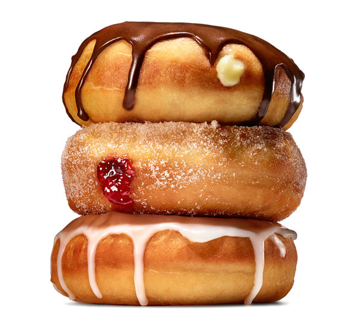

Doughnuts

Description
Homemade doughnuts are a bit of a project, but they’re less work than you might think,
and the result is a truly great, hot, crisp doughnut. Once you’ve mastered this basic
recipe for a fluffy, yeasted doughnut, you can do pretty much anything you like in terms
of glazes, toppings and fillings.
Ingredients
- For the Dough
- 1 1/4 cups milk
- 2 1/4 teaspoons (one package) active dry yeast
- 2 eggs
- 8 tablespoons (1 stick) butter, melted and cooled
- 1/4 cup granulated sugar
- 1 teaspoon salt
- 4 1/4 cups all-purpose flour, plus more for rolling out the dough
- 2 quarts neutral oil, for frying, plus more for the bowl
Steps
- Heat the milk until it is warm but not hot, about 90 degrees. In a large bowl,
combine it with the yeast. Stir lightly, and let sit until the mixture is foamy,
about 5 minutes
- Using an electric mixer or a stand mixer fitted with a dough hook, beat the eggs,
butter, sugar and salt into the yeast mixture
- Add half of the flour (2 cups plus 2 tablespoons), and mix until combined, then mix
in the rest of the flour until the dough pulls away from the sides of the bowl. Add
more flour, about 2 tablespoons at a time, if the dough is too wet
☆ NOTE: If you’re using an electric mixer, the dough will probably become
too thick to beat; when it does, transfer it to a floured surface, and gently
knead it until smooth
- Grease a large bowl with a little oil. Transfer the dough to the bowl, and cover.
Let rise at room temperature until it doubles in size, about 1 hour
- Turn the dough out onto a well-floured surface, and roll it to 1/2-inch thickness
- Cut out the doughnuts with a doughnut cutter, concentric cookie cutters or a drinking
glass and a shot glass (the larger one should be about 3 inches in diameter), flouring
the cutters as you go
☆ NOTE: Reserve the doughnut holes. If you’re making filled doughnuts,
don’t cut out the middle
- Knead any scraps together, being careful not to overwork, and let rest for a few minutes
before repeating the process
- Put the doughnuts on two floured baking sheets so that there is plenty of room between
each one
- Cover with a kitchen towel, and let rise in a warm place until they are slightly puffed
up and delicate, about 45 minutes
☆ NOTE: If your kitchen isn’t warm, heat the oven to 200 at the beginning of
this step, then turn off the heat, put the baking sheets in the oven and leave the
door slightly opened
- About 15 minutes before the doughnuts are done rising, put the oil in a heavy-bottomed
pot or Dutch oven over medium heat, and heat it to 375
- Meanwhile, line cooling racks, baking sheets or plates with paper towels
- Carefully add the doughnuts to the oil, a few at a time. If they’re too delicate to pick
up with your fingers (they may be this way only if you rose them in the oven), use a metal
spatula to pick them up and slide them into the oil. It’s O.K. if they deflate a bit; they’ll
puff back up as they fry
- When the bottoms are deep golden, after 45 seconds to a minute, use a slotted spoon to flip;
cook until they’re deep golden all over (doughnut holes cook faster)
- Transfer the doughnuts to the prepared plates or racks, and repeat with the rest of the dough,
adjusting the heat as needed to keep the oil at 375
- Glaze or fill as follows, and serve as soon as possible